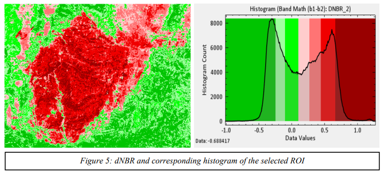
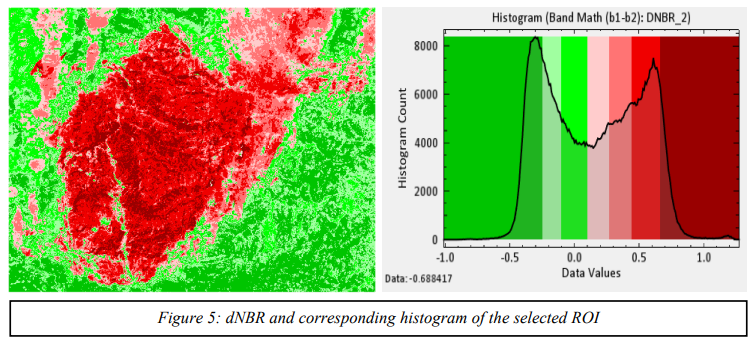

Rahul Kumar Shah
Research Scientist
Perrysburg, OH | (575) 339-7948 | rahul.shah12@gmail.com | linkedin.com/in/rahul-shah12k
Perrysburg, OH | (575) 339-7948 | rahul.shah12@gmail.com | linkedin.com/in/rahul-shah12k
Hello! I'm Rahul Shah, a passionate Electrical and Computer Science Engineer specializing in the dynamic field of image processing. With a solid foundation in developing and implementing cutting-edge algorithms, I thrive on transforming complex concepts into innovative solutions that drive tangible results.
Over the past four years, I've honed my skills in analyzing, processing, and interpreting digital imagery to extract meaningful insights. My journey has equipped me with proficiency in various programming languages, including Python, MATLAB, and C++, along with expertise in machine learning frameworks like TensorFlow.
Beyond technical proficiency, I bring a collaborative spirit and a commitment to excellence to every project I undertake. I thrive in multidisciplinary environments, leveraging my communication and problem-solving skills to foster innovation and drive project success.
I am eager to continue my journey of exploration and discovery, seeking opportunities to push the boundaries of image processing technology and make a meaningful impact on the world. Let's connect and embark on this exciting journey together.
Contact MePython (Numpy, Pandas, GeoPandas, GDAL, Rasterio, Matplotlib), MATLAB, C, C++, R, Linux scripting
TensorFlow, scikit-learn, Keras
Image Segmentation, Classification, Image Registration and Reconstruction, Object Detection, Feature Extraction, Edge Detection, Morphological Operations
ENVI, SeaDAS, Google Earth Engine, ArcGIS, QGIS, GDAL, SNAP, ERDAS Imagine, Sentinel Hub, Sentinel Toolbox
Time series analysis, Hypothesis Testing, Regression Analysis, Spatial Statistics, Data Visualization
Land Cover Classification, Change Detection, Radiometric Calibration, Atmospheric Correction, Remote Sensing Applications
Version Control (Git), Agile Development, Software Testing, Algorithm Optimization
Landsat, Sentinel, MODIS, WorldView, PlanetScope SuperDove, SkySat, Pleiades Neo, AVHRR, Hyperion, UAVs (Drones)
Leadership, Collaboration, Problem-Solving, Time Management, Agile Methodologies
 


Love to play Badminton and Tennis. Currently reading "Practical Optimism". Travelling and Photography.